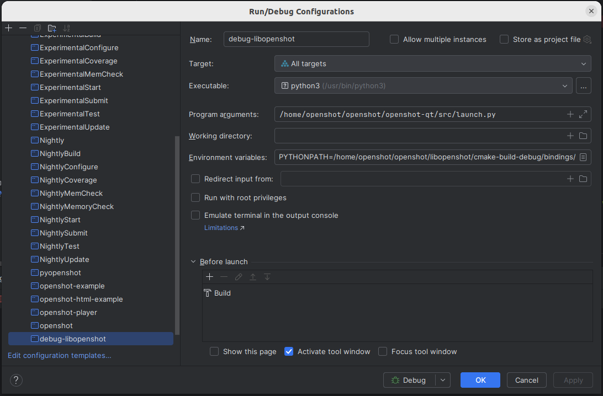

OpenShot is a popular open-source video editor. Here to record the CLion setup for debugging an issue. The source code of OpenShot is in three repos: openshot-qt, libopenshot, and libopenshot-audio. openshot-qt is the frontend which uses the other two libraries for video and audio processing. The frontend is a Python program and can be started by:
python <path-to-repo>/openshot-qt/src/launch.py
To use the local built version of libopenshot, we need to tell Python where to find it.
PYTHONPATH=<path-to-repo>/libopenshot/cmake-build-debug/bindings python <path-to-repo>/openshot-qt/src/launch.py
With this knowledge, we can create a Run/Debug Configuration(see screenshot below) in CLion to debug libopenshot. The Executable is python3 instead of <path-to-repo>/openshot-qt/src/launch.py, otherwise debugger will complain wrong binary format. The absolute path of launch.py is passed as an argument to the Executable. The environment variable PYTHONPATH is set to <path-to-repo>/libopenshot/cmake-build-debug/bindings. cmake-build-debug is the default build directory for CMake and is created automatically by CMake.
